Convert BPMN to a process model in the tool.
In this exercise, you need to create the BPMN model below in the DF-BPMN tool, including the data flow of each activity. To begin, we will explain where you can find the elements of the process model. Then, you should be able to add activities and data within each activity.
DF-BPMN symbols
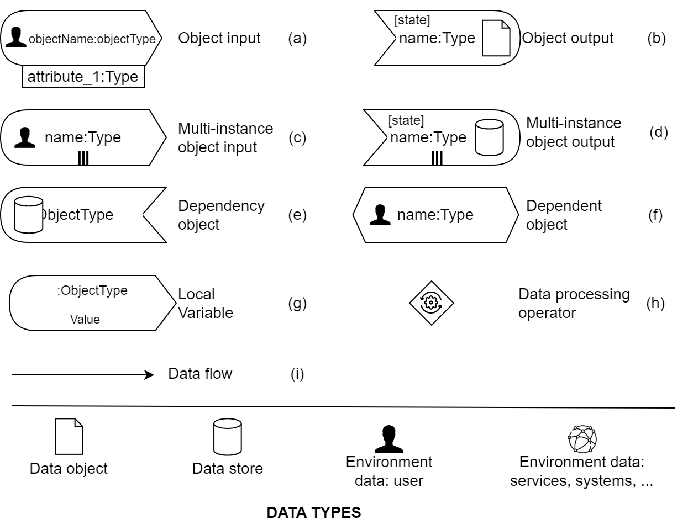These symbols represent the data flow of each activity. There are different data types:
- Data object: These are the process variables used during the execution phase.
- Data store: These are the business data that are stored or retrieved from the database (BDM within Bonita Studio).
- Data user: This is the data needed to be read from the user to continue the activity tasks (Fill in information from the user to be used within the process model).
- Data system: These are the data that are read from or sent to a server system (e.g., auto-sending email, auto-checking the calendar).
(a), (c), (e), (f), and (g) are input data, where:
- (a): This is a simple data input. This input object has a name, type, and can also be attached with attributes. The object type can be a simple type like string, integer, or a complex type like the UML object name (Request in this example).
- (c): This is a multi-instance data input. This input object also has a name, type, and can be attached with attributes. It is used to represent a multi-instance object or a list of objects of the same data type.
- (e) and (f): These are two data objects that depend on each other. If we have (e), it should be connected to (f). (e) is used to indicate that we need data from a list from the database. However, (f) is used to indicate that the user needs to select one (or more) objects from the database.
- (g): This is a static data input. This input object has a name, type, and value. This data object is used to represent a fixed value that we need to use within our model.
(b) and (d) represent output data, where:
-
(b): This is a simple data output object. This output object has a name, type, and can also be attached
with attributes. It is linked to a state to represent the operation on this object. The object type can
be a simple type like string or integer, or a complex type like the UML object name (Request in this
example).
State can be:- init: for the creation of a new data object.
- read: for reading a data object.
- delete: for deleting a data object.
- update: for updating a data object.
- (d): This is a multi-instance data output object. This output object has a name, type, and can also be attached with attributes. It is also linked to a state to represent the operation on this object.
(h): This is the data processing operator that represents complex data operations such as sum and conditions.
This operator is connected to the data input and data output objects.
(i): This is the flow that connects the inputs to the outputs. Additionally, we can connect the outputs to the outputs and connect the data operator to the input and output.
Add Pool and Lane
-
After opening your project (double-click on the project file name), you can start the modeling. You can find
all the elements in the 'Palette'.
-
From the 'Palette,' click on 'Pool,' and then click on the white space to add the pool.
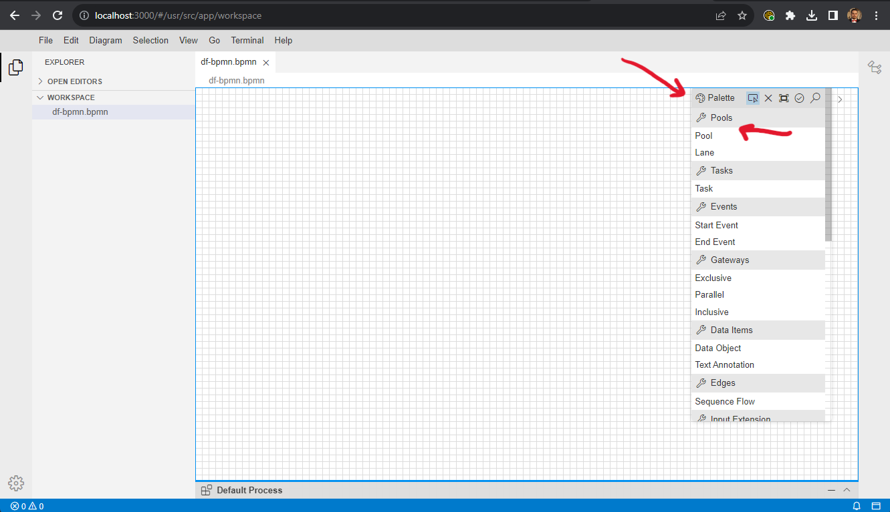 -
Next, we should add the lane to our process model. You can do that by clicking on 'Lane' (find it in the
'Palette') and then clicking on the name of your pool to add a new lane.
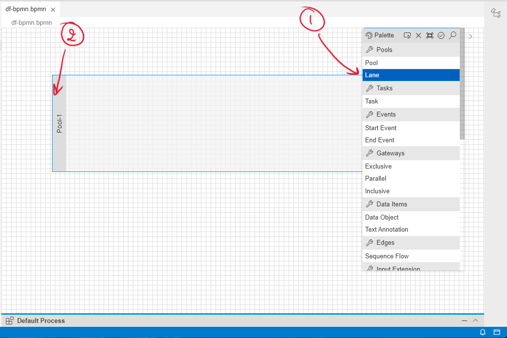 -
To change the Pool name, click on the pool (on the pool name). Then, you should open the properties
panel. In the 'General' tab, you can change the name of your pool.
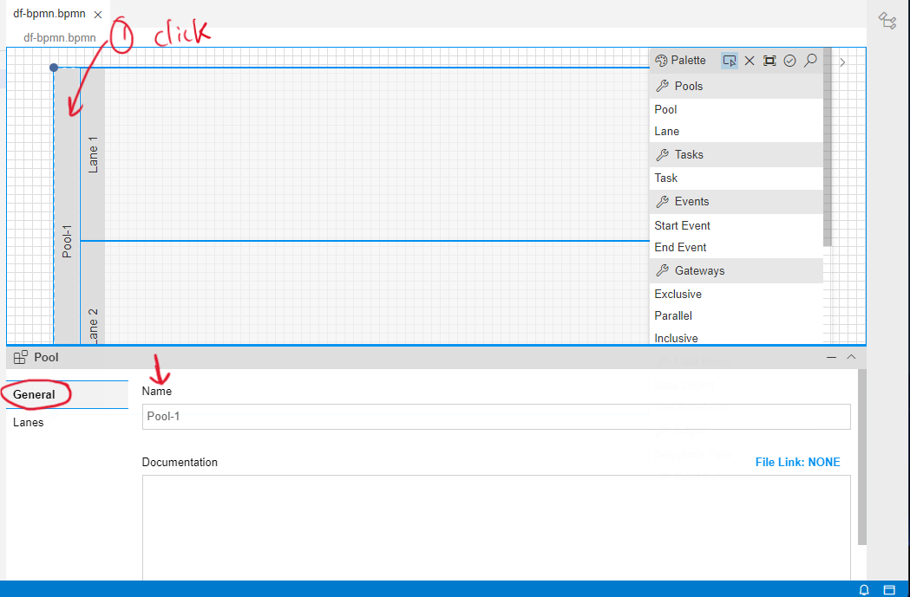 -
To change the Lane name, click on the pool (on the pool name). Then, you should open the properties
panel. In the 'Lanes' tab, you can change the names of your lanes (which is a list of all your lanes in
the selected pool).
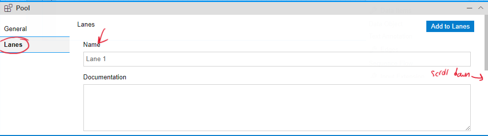
Add Process Model Elements
-
You can find all the process elements in the 'Palette.' In the DF-BPMN tool, we suggest adding an
activity and then directly adding its data elements. This is helpful for reducing the time spent
expanding the activity.
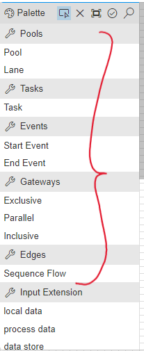 -
From the property panel, you can change the name of the activity, and you can also expand and collapse
an activity.
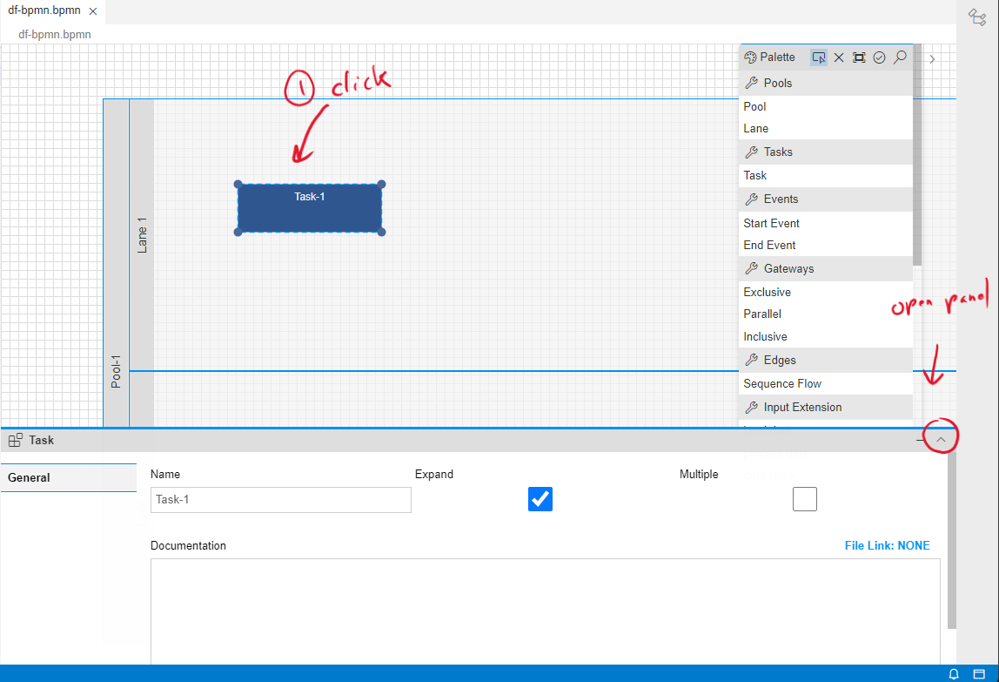
Add data within the activity
-
Before adding data to the activity, ensure that the activity is expanded. Then, you can adjust its size
according to your needs.
-
All the data can be found within the panel. You can select the data object you need and then add it to
the activity.
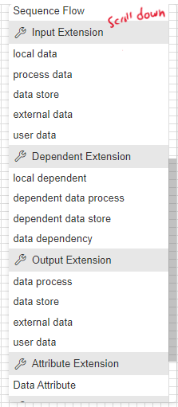 -
You can change the name of the data object from the property panel, and you can also change the type and
state in the case of an output object.
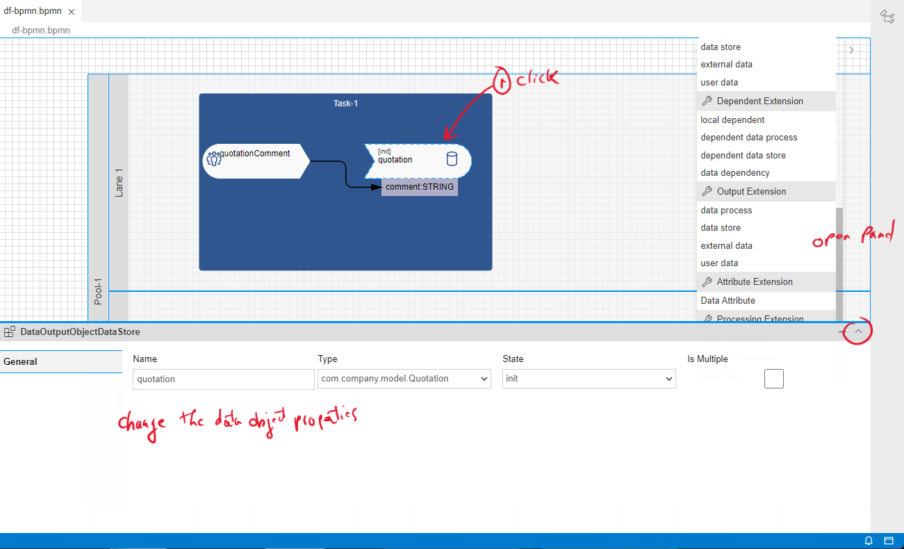 -
In another case (not included in this example), you can add the data processing operator. This operator
is used to define specific data operations like sum, and so on.
To do that, after adding the data processing operator and connecting it to the data object inputs and outputs, you should add the description of the operator by opening the property panel. Within the 'Documents' section, you can add the description using your own words. Then, click on 'Generate Behavior.' After a few seconds, the data operations will be expressed in another language, which will be used later as code in the next exercise.
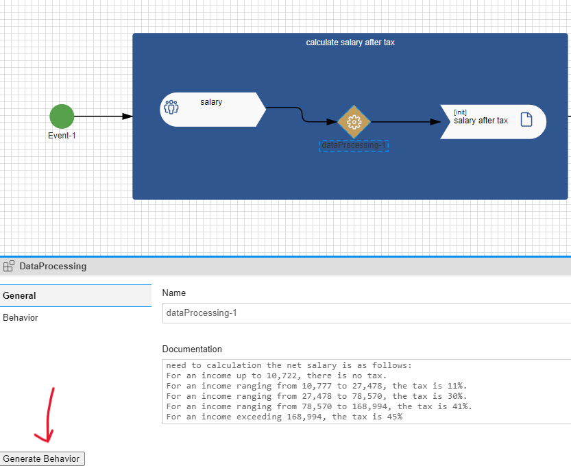
Add data to the following activity
In this exercise, you need to create a process model using the DF-BPMN tool and also add the data for each activity. You have some hints for the activities you want to create; don't forget to add sequence flows between activities.Process description
A user fills out a procurement request (including a summary and description) and identifies a supplier. This request is then sent to the supplier for a quotation. The supplier should add the following information to the quotation: price, comments, and whether they accept or not. The status of the quotation will automatically change to 'completed.'After completion, the quotations are sent back to the requester for review and selection. Before starting the review process, the status of the request will be changed to 'pending for review.' During the review of the quotation, the requester should either accept or reject it. Finally, based on the decision of the requester, the request status will change to 'completed' or 'abort.'
To effectively implement the process, developers must understand how the information is conceptually structured and arranged within each class (suppliers, quotations, and requests) and how the process interacts with it
-
Activity "Create request and select supplier"
In this activity, we need to create two main objects:
- Request, which includes the summary and description.
- Quotation, which is created based on the request and the selected supplier.
This activity, with the associated data, expresses all the required information. Please add it to your process model.
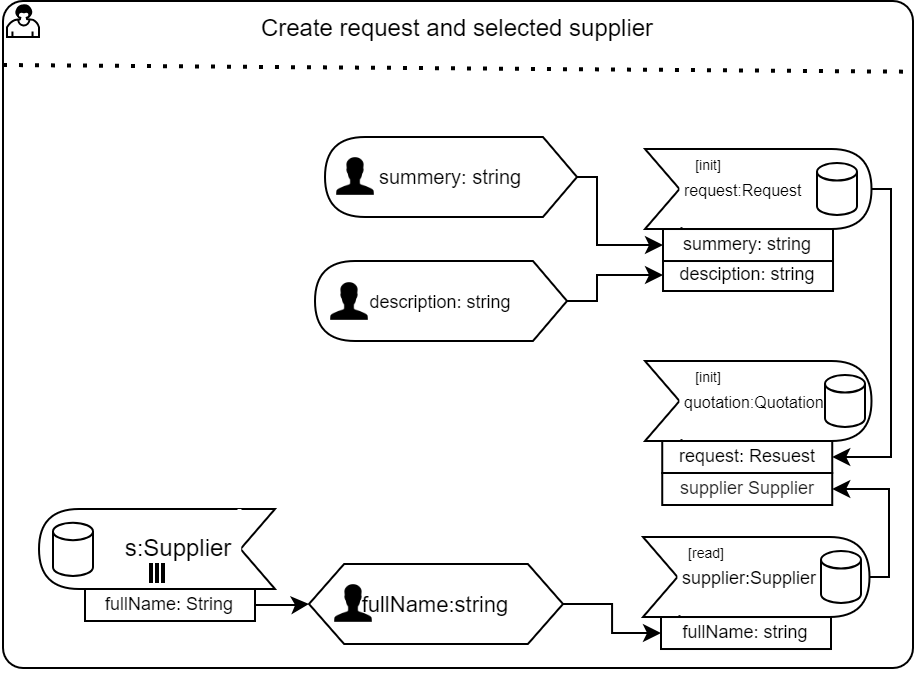 -
Activity "Complete quotation"
In this activity, the supplier (represented by the lane) should provide information about the quotation. This activity is meant to update the quotation that was created in the first activity.
To find the data object related to this activity, refer to the process description.
Note: In the first activity, you defined the 'quotation' data object. You should use the same name for this data object throughout the entire process model to reference the same data object.
Hint: In this activity, you have three data user inputs and one static input. Additionally, you have one data object output with four attributes.
Please add the necessary data elements to this activity in your model. -
Activity "Update request status"
After extracting the data information from the process description, please add this activity. -
Activity "Review quotation"
After this activity, there is a gateway. Therefore, we can add a process variable to use it later in making a decision after the gateway.
This activity can be modeled in two ways:-
The first way is to simply review the request and update it based on whether it is accepted or
not. Then, use the request attribute (isAccepted) to make a decision.
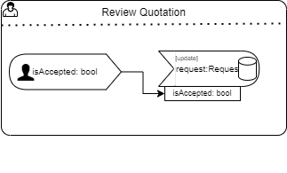 -
In another way, we can define the process variable, which will be used later in the gateway, and
then update the request if it is accepted or not.
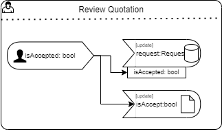
Add this activity to your model.
Note: You should always use the same name for the data that you have used before, which is 'request'. -
The first way is to simply review the request and update it based on whether it is accepted or
not. Then, use the request attribute (isAccepted) to make a decision.
-
Activity "Complete request"
Add this activity and extract the data information from the process description.
Note: You should always use the same name for the data that you have used before. -
Activity "Abort request"
Add this activity and extract the data information from the process description.
Note: You should always use the same name for the data that you have used before.
At the end of this exercise, you should have all the activities illustrated in the process model (BPMN to DF-BPMN tool), as well as the data operations within each activity.